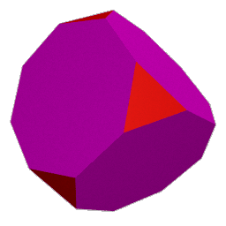

Die Archimedischen Körper
(von www.mathe.tu-freiberg.de/~hebisch/cafe/archimedische.html; die Links auf dieser Seite führen Sie zu dieser Site)Definition: Ein Polyeder heißt halbregulär oder semiregulär, wenn alle seine Oberflächen aus regelmäßigen Vielecken (eventuell unterschiedlicher Eckenzahl) bestehen, und jede Ecke des Polyeders durch eine seiner Symmetrieoperationen auf jede andere Ecke abgebildet werden kann. Es muß sich also um ein uniformes Polyeder handeln.
Bereits Platon soll neben den nach ihm benannten regulären Polyedern das Kuboktaeder gekannt haben. Seit Archimedes, dessen Arbeit darüber jedoch nicht erhalten geblieben ist, weiß man, daß es neben den Platonischen Körpern (und unendlich vielen Prismen und Antiprismen) noch genau dreizehn halbreguläre konvexe Polyeder gibt, die üblicherweise als Archimedische Körper bezeichnet werden:
1) Abgeschrägtes Hexaeder (Cubus simus) (3,3,3,3,4)
2) Kuboktaeder (3,4,3,4)
3) (kleines) Rhombenkuboktaeder (3,4,4,4)
4) Abgeschrägtes Dodekaeder (Dodekaedron simum) (3,3,3,3,5)
5) (kleines) Rhombenikosidodekaeder (3,4,5,4)
6) Ikosidodekaeder (3,5,3,5)
7) Abgestumpftes Tetraeder (3,6,6)
 8) Abgestumpftes Hexaeder (3,8,8)
 9) Abgestumpftes Dodekaeder (3,10,10)
9) Abgestumpftes Dodekaeder (3,10,10)
10) Abgestumpftes Oktaeder (4,6,6)
11) Abgestumpftes Kuboktaeder oder großes Rhombenkuboktaeder(4,6,8)
12) Abgestumpftes Ikosidodekaeder oder großes Rhombenikosidodekaeder (4,6,10)
13) Abgestumpftes Ikosaeder (5,6,6)
Abgeschrägtes Hexaeder und abgeschrägtes Dodekaeder kommen in zwei spiegelbildlichen Varianten vor, die sich nicht durch Drehungen zur Deckung bringen lassen. Es handelt sich also um chirale Körper. Die Namen Cubus simus und Dodekaedron simum für sie stammen von Johannes Kepler. Dieser hat sie in seinem Buch Harmonice Mundi, das 1619 in Linz erschienen ist, genauer untersucht und insbesondere die Vollständigkeit der obigen Liste bewiesen. Dabei klassifizierte er sämtliche möglichen halbregären Polyeder nach der Anzahl und Art der regelmäßen Vielecke, die in jeder der kongruenten Ecken zusammenstoßen. Wie schon von Euklid bei der Diskussion der regulären Polyeder bemerkt, können dies nur drei, vier oder fünf Vielecke sein.
Fall 1: In jeder Ecke stoßen drei regelmäße Vielecke zusammen.
Fall 1a: Es handelt sich um jeweils gleiche Vielecke.
Dann liegt bereits ein regulärer Körper vor und zwar ein Tetraeder, ein Hexaeder oder ein Dodekaeder.
Fall 1b: Zwei der Vielecke sind gleich und das dritte ist von ihnen verschieden.
Die Möglichkeiten werden nun durch den folgenden Hilfssatz eingeschränkt.
Hilfssatz 1 Stoßen in den Ecken eines uniformen Polyeders jeweils genau ein a-Eck, ein b-Eck und ein c-Eck zusammen und sind b und c verschieden, so muß a gerade sein.
Zum Beweis beachte man, daß an den Seiten des a-Ecks abwechselnd die Seiten eines b-Ecks und eines c-Ecks liegen. Das ist aber nur möglich, wenn a gerade ist.
Beachtet man noch, daß die Winkelsumme in jeder Ecke eines konvexen Polyeders echt kleiner als 360o sein muß, so bleiben nur die folgenden Möglichkeiten mit ihren eindeutigen Realisierungen:
2 Quadrate, 1 beliebiges regelmäßes n-Eck (n ungleich 4): Prisma
2
Sechsecke, 1 Dreieck: Abgestumpftes Tetraeder
2 Sechsecke, 1 Quadrat:
Abgestumpftes Oktaeder
2 Sechsecke, 1 Fünfeck: Abgestumpftes
Ikosaeder
2 Achtecke, 1 Dreieck: Cubus simus
2 Zehnecke, 1
Dreieck: Dodekaedron simum
Fall 1c: Die drei Vielecke sind paarweise verschieden.
Aus dem Hilfssatz 1 ergibt sich sofort, daß jedes der Vielecke eine gerade Anzahl von Ecken besitzt. Beachtet man noch die obige Beschränkung der Winkelsumme, dann kommen nur die folgenden Möglichkeiten mit ihren eindeutigen Realisierungen in Frage:
1 Quadrat, 1 Sechseck, 1 Achteck: Abgestumpftes Kuboktaeder
1
Quadrat, 1 Sechseck, 1 Zehneck: Abgestumpftes Ikosidodekaeder
Fall 2: In jeder Ecke stoßen vier regelmäße Vielecke zusammen.
Auch hier lassen sich die Möglichkeiten durch einen Hilfssatz stark einschränken.
Hilfssatz 2 Stoßen in den Ecken eines uniformen Polyeders jeweils genau ein 3-Eck, ein a-Eck, ein b-Eck und ein c-Eck so zusammen, daß jeweils das a-Eck und das c-Eck eine Seite mit dem Dreieck gemeinsam haben, so muß a = c gelten.
Wie beim Beweis von Hilfssatz 1 müssen also an den Seiten des Dreiecks abwechselnd ein a-Eck und ein c-Eck liegen. Dies geht nur, wenn a = c ist.
Dieser Hilfssatz und die Beschränkung der Winkelsumme läßt nur noch die folgenden Möglichkeiten zu, die sich auch alle eindeutig in der angegebenen Weise realisieren lassen:
4 Dreiecke: Oktaeder
3 Dreiecke, 1 beliebiges n-Eck (n ungleich 3):
Antiprisma
2 Dreiecke, 2 Quadrate: Kuboktaeder
2 Dreiecke, 2
Fünfecke: Ikosidodekaeder
1 Dreieck, 3 Quadrate:
Rhombenkuboktaeder
1 Dreieck, 2 Quadrate, 1 Fünfeck:
Rhombenikosidodekaeder
Fall 3: In jeder Ecke stoßen fünf regelmäße Vielecke zusammen.
Wegen der schon öfters benutzten Beschränkung der Winkelsumme in den Ecken eines konvexen Polyeders bleiben nur die folgenden drei Möglichkeiten, die sich in der angegebenen Weise realisieren lassen. Dabei ist das Ikosaeder eindeutig bestimmt, für die anderen beiden Körper gibt es jeweils die beiden oben schon angesprochenen verschiedenen spiegelbildlichen Realisierungen.
5 Dreiecke: Ikosaeder
4 Dreiecke, 1 Quadrat: Cubus
simus
4 Dreiecke, 1 Sechseck: Dodekaedron simum
Abbildungen der Archimedischen Körper aus Keplers Buch Harmonice Mundi
Erst um 1930 fand J. C. P. Miller eine Variante des Rhombenkuboktaeders, die aus diesem entsteht, wenn man eine seiner "Kappen", die sich oberhalb eines "Gürtels" aus Quadraten befindet, um 45° verdreht. Auch bei diesem konvexen Polyeder stoßen in jeder Ecke jeweils ein Dreieck und drei Quadrate zusammen, die Ecken der oberen Kappe sind jedoch nicht mehr zu denen der unteren Kappe kongruent, es handelt sich also nicht um ein uniformes Polyeder. Es reicht also nicht, die Uniformität durch die Gleichartigkeit der Folge der Vielecke zu beschreiben, die in jeder Ecke zusammenstoßen, wie dies manchmal bei der Definition der halbregulären Körper getan wird.
Jeder Archimedische Körper besitzt eine Außenkugel. Diese gestattet die Konstruktion des jeweiligen dualen Körpers.
In der folgenden Tabelle sind die Werte für den Radius R der Außenkugel für den jeweiligen Körper der Kantenlänge a zusammengestellt:
R Radius der Außenkugel,
| R/a | |
| 1) | *) |
| 2) | 1 |
| 3) | 1/2*√(5+2*√2) |
| 4) | **) |
| 5) | 1/2*√(4+2*√2) |
| 6) | 1/2*(1+√5) |
| 7) | 1/4*√22 |
| 8) | 1/2*√(7+4*√2) |
| 9) | 1/4*√(74+30*√5) |
| 10) | 1/2*√10 |
| 11) | 1/2*√(13+6*√2) |
| 12) | 1/2*√(31+12*√5) |
| 13) | 1/4*√(58+18*√5) |
*) R=1/2*√((x^2 - 8x + 4)/(x^2 - 5x +4)) mit x = (19 +3*√33)^(1/3)
**) R=1/2*√((8*2^(2/3) - 16x + 2^(1/3)x^2)/(8*2^(2/3) - 10x + 2^(1/3)x^2)) mit x = (49 +27*√5 + 3*√6*√(93 + 49*√5))^(1/3)
Das in der Antike vorhandene allgemeine Interesse an regulären und halbregulären Polyedern kam nach einer langen Ruhephase im Mittelalter erst wieder in der Renaissance auf, als sich Mathematiker, Künstler und Handwerker mit ihrer Beschreibung, Darstellung und Herstellung beschäftigten. Beispielsweise behandelt Pierro della Francesca in seinem Buch De Corporibus Regularibus von 1480 die Platonischen Körper. Albrecht Dürer gibt für einige Archimedische Körper in dem vierten Buch seiner Vnderweysung der messung mit dem zirckel vnd dem richtscheyt von 1525 die Netze an, und auch in dem Buch De divina proportione von Luca Pacioli aus dem Jahr 1509 findet sich beispielsweise die folgende Abbildung des Rhombenkuboktaeders.
Systematisch wurden die Archimedischen Körper allerdings erst von Johannes Kepler untersucht, der auch zwei nichtkonvexe reguläre Polyeder gefunden hat, die Keplerschen Sternpolyeder. Weitere, von regulären und halbregulären Polyedern abgeleitete Polyederdarstellungen finden sich in den Büchern Geometria et Perspectiva von Lorenz Stöer aus dem Jahr 1567 und Perspectiva corporum regularium von Wenzel Jamnitzer aus dem Jahr 1568.Übrigens kam es auch im 16. Jahrhundert in Mode, Sonnenuhren auf den Flächen vornehmlich des Rhombenkuboktaeders anzubringen und in Parkanlagen aufzustellen, wo man sie heute noch bewundern kann.
Weiterführende Literatur
- Tiberiu Roman, Reguläre und halbreguläre Polyeder, VEB Deutscher Verlag der Wissenschaften, Berlin, 1987. ISBN 3-326-00192-4
- Paul Adam, Arnold Wyss, Platonische und Archimedische Körper, ihre Sternformen und polaren Gebilde, Verlag Freies Geistesleben, Stuttgart, 1994. ISBN 3-7725-0965-7
- Magnus J. Wenninger, Polyhedron Models, Cambridge University Press, Cambridge, 1989. ISBN 0-521-09859-9
- Alan Holden, Shapes, Space and Symmetry, Dover Publ., New York, 1991. ISBN 0-486-26851-9